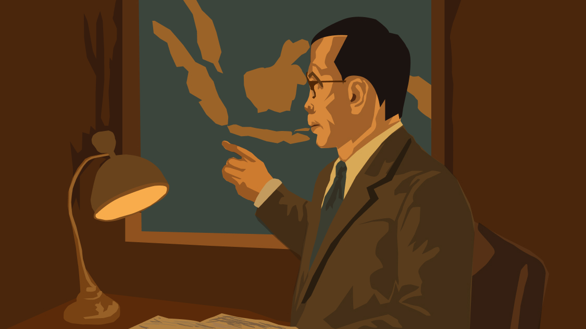
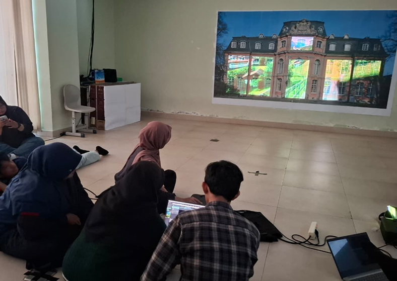
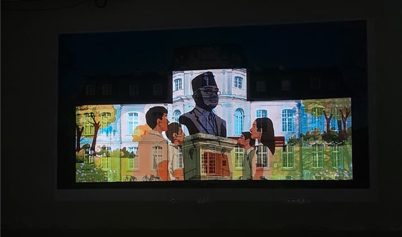

STORY OF THIS PROJECT

Sebuah kanvas tidak selamanya berupa kertas datar atau layar monitor yang kaku. Ketika mata kuliah Workshop Audio Visual Media pada semester 3 mencapai puncaknya pada penilaian akhir, tantangan yang disodorkan benar-benar mendobrak batas kenyamanan: menciptakan sebuah animasi 2D yang output akhirnya bukan sekadar video biasa, melainkan sebuah video mapping yang akan diproyeksikan langsung pada fasad megah sebuah bangunan. Ini adalah wilayah baru yang belum pernah dijamah sebelumnya-sebuah petualangan visual yang menuntut presisi tingkat tinggi.

Menyelaraskan setiap piksel animasi dengan lekuk-lekuk arsitektur nyata terbukti bukan perkara mudah. Proses kreatif tidak hanya berdiam di depan meja komputer. Langkah awal harus dimulai dengan turun langsung ke lapangan, melakukan observasi mendalam untuk memetakan setiap detail, sudut, dan dimensi dari fasad bangunan tersebut. Data lapangan inilah yang kemudian dirajut menjadi template panduan agar setiap ilusi optik yang diciptakan nanti bisa menempel sempurna pada struktur dinding aslinya.

Di tengah kejaran tenggat waktu semesteran yang terbilang sangat singkat, strategi pengerjaan pun harus disusun secara matang. Kuncinya terletak pada fase konseptual: pembuatan aset-aset desain harus diselesaikan secara presisi sejak awal. Dengan aset yang matang dan terstruktur, proses menganimasi dapat dipacu dengan lebih cepat dan efisien tanpa harus kehilangan kualitas estetika.
Proyek ini akhirnya menjadi sebuah pembuktian tentang bagaimana sebuah animasi tidak hanya hidup di dalam ruang digital, tetapi juga mampu berinteraksi, bernapas, dan mengubah persepsi sebuah bangunan fisik melalui keajaiban proyeksi cahaya.
TOOLS USED FOR THIS PROJECT
Mari kita bangun sesuatu yang luar biasa bersama
Terbuka untuk kesempatan magang, project freelance atau kolaborasi riset.